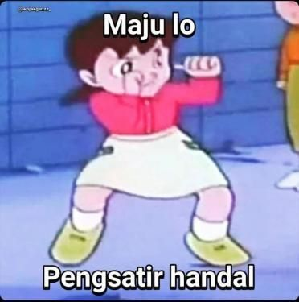

Belajar Cara Menangkal Satir
1. kita wajib menggunakan stiker  dengan menggunakan stiker ini kita bisa mengcounter para pengsatir handal yang menyatir lewat sticker "☝ 😅"
2. kita wajib ngebilekin dia, agar dia risih dan kebilekan